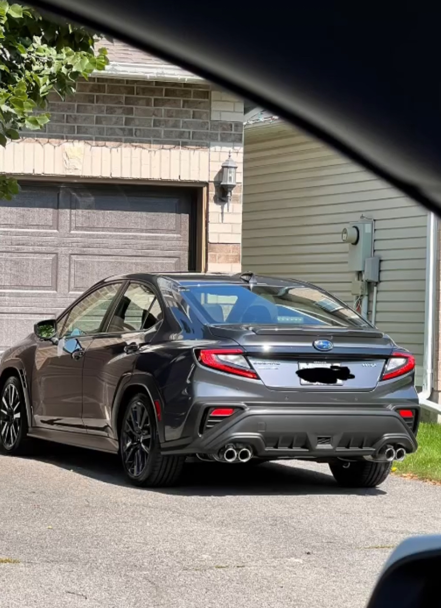
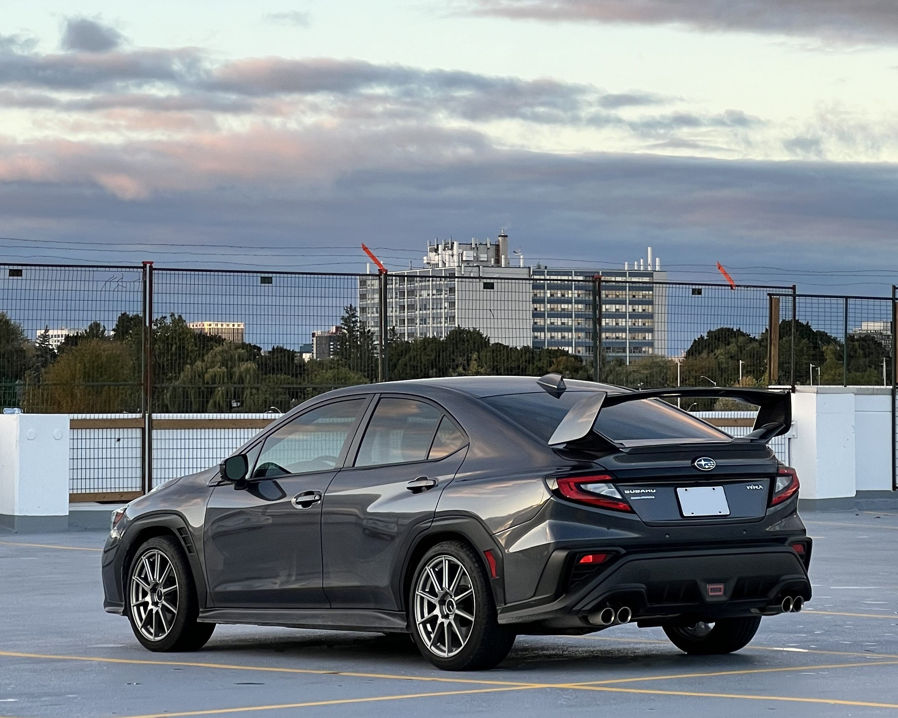
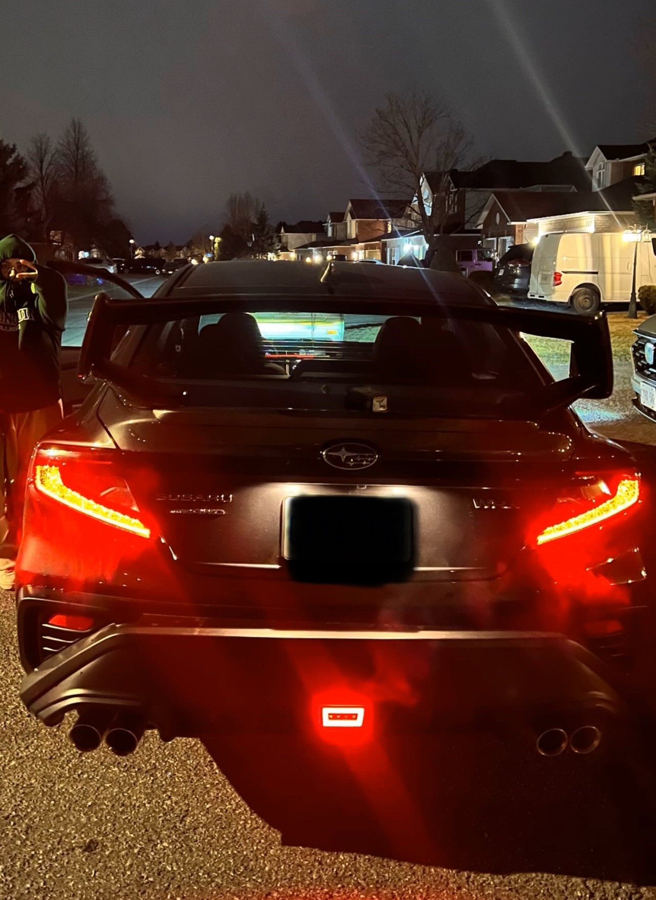

I was never really into the car scene until I got my first car, which was a Honda Civic 2022. It was my first ever car, and I've drove it around for a good year. Again, I was never into cars - but my dad is. He always said my car wasn't sporty enough - and that made me infuriated. However, being the bigger person and not letting his words get to me, I then traded in my car for a Subaru WRX 2023 to simply prove him wrong. Jokes aside, I always wanted to get a considerably-fast car, as I've always been a fan of car media in both video games (Need for Speed) and movies (Fast and Furious). This transition became an eye-opener to something I really enjoy in my day-to-day. Countless sweat, money and time spent on manual labour and watching youtube tutorials, and even the car itself, allowed me to work on MY car, MY way - and it was worth every bit of it.
Current modifications include:
- Plate Mount by Subie Supply Co.
- STI OE Style Spoiler by Noble
- CS Style Grille by Noble
- F1 Brake Light by Noble
- Storm Gray TS10 18 x 8.5 +35mm by Enkei
- Rear Tow Hook by Perrin
- Yellow Fog Lights Vinyl by Aeroflow Dynamics Overlays
- Tailights Upper-Arch Vinyl by Myself

This image is when I first got my car from the dealership and brought it home.

This image is when my girlfriend and I removed the front bumper from the car, removed the OEM grille and replaced it with the Noble CS style grille. It was a pain to both take off and put on - but results don't lie... it was nice.

This image is the more completed build of my car from the rear view.

This image is the post-application of my own Taillight Upper-Arch Vinyl. Dimensions were personally measured and printed on a Cricut machine using premium vinyl. It accomplished making the car have a more aggressive look.